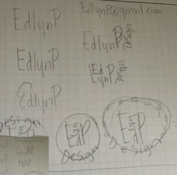
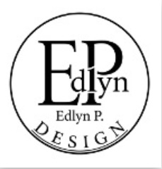
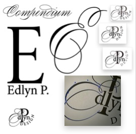

Personal Identity Monogram & Process Case Study
Documenting the strategic evolutionary timeline of a personal brand identity, outputting a completely lossless, web-optimized Scalable Vector Graphic (.svg).
The Evolutionary Timeline Strategy
1. Creative Problem-Solving & Safeguards
By exercising vital professional intuition and protecting my core digital intellectual property, I refused to publish raw source vector files (.ai) onto a public server. Instead, this identity matrix showcases vector mastery using crisp structural snapshots and a clear, multi-stage evolutionary sequence mapping out the emblem's growth parameters.
2. The 4-Stage Evolutionary Matrix
To clearly communicate the creative development lifecycle to capstone reviewers and stakeholders, the emblem's growth paths are broken down below in a strict, chronological 4-stage grid:



3. SVG Asset Optimization
The final monogram utilizes the optimized .svg container standard. This method
cleans away unnecessary vector layers, embeds the exact #646059 (Soft Slate
Grey) line style token, ensures the logo codes scale seamlessly without
resolution loss, and reduces file payloads so pages load instantly across mobile devices.
Syllabus Bibliography Verification
Price, E. (2026). Figure 1: 4-stage evolutionary grid sequence documenting the personal identity monogram lifecycle [Unpublished graphic illustration]. Completed academic course assignment for WDDE 495 Web & Digital Design, University of Maryland Global Campus.